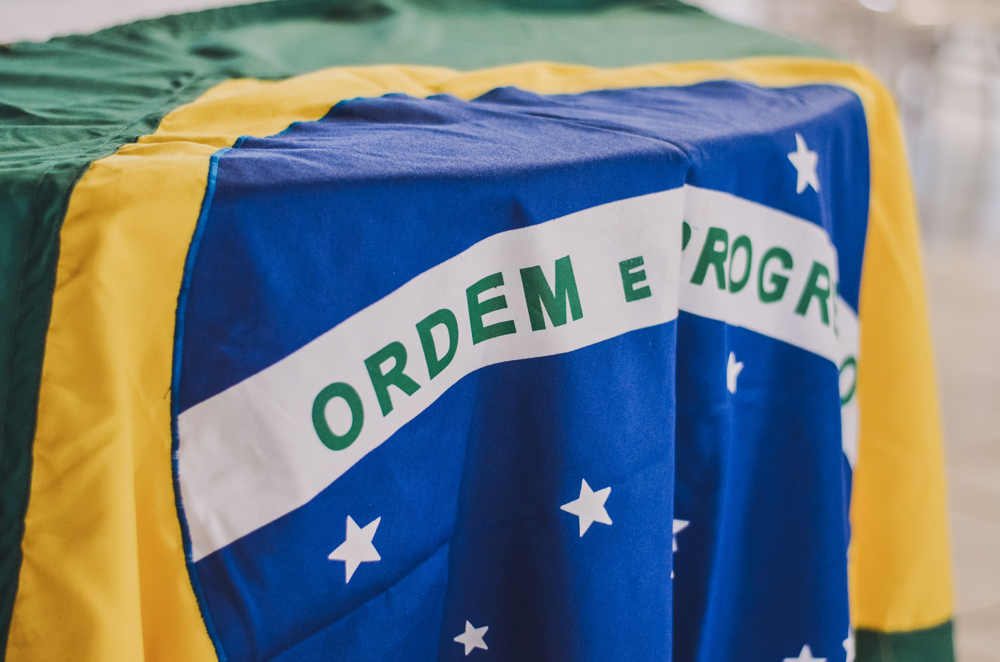

Childhood
Last Updated, Oct 7th, 2022
Growing up nothing really interesting happened in my childhood, I was just your avarage Brazilian child who wwants to go out and play soccer everyday.
Some hobbies that I had as a kid was hardly any since I didnt really do anything other than school and games so I kind of just stuck to the basics that a kid has growing. However one thing that I was heavily into and still am even today was the world of racing, I dont know how this passion emerged but what I do know is that I was crazy for anything racing related
Teenage Years
Last Updated, Oct 7th, 2022

As a teenager of course I grew to find more things interesting and found many more hobbies which I wasnt interested in before.
The hobbie of racing continued but know I was also into to Video Editing, Programming, Art, Visual Effects, a much more which I was not in the past, a reason for why all of my hobbies are all computer related might have been due to my dads influence growing up with him always working on WAV's which required some software knowledge.
About Brazil
Brazil is a South American country with an extremely rich cultufre with diverse people and foods, although recently Brazil economically has underperformed and has been in many corruption scandles which set back that country.
Images of Brazil


Visiting Brazil
If you hope to visit Brazil then I would reccomend to have patience, currently Brazil is facing many struggles and with recent protests due to the recent elections, it is best to wait for things to calm down first and then visit Brazil then